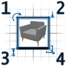
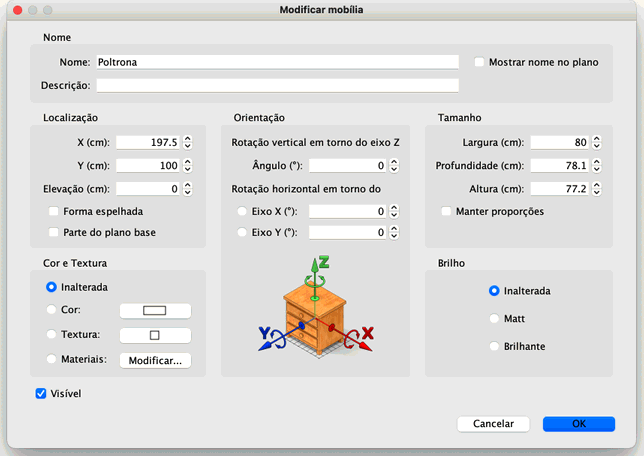

|
|
Editanto mob�lias | ||
|
Voc� pode editar a posi��o, tamanho e �ngulo de uma mob�lia, tanto com o mouse ou com
o menu Mob�lia > Modificar.... Quando uma mob�lia est� selecionada no plano, voc� pode tamb�m seu tamanho, eleva��o, ou �ngulo utilizando um dos quatro indicadores que aparecem em cada canto da mob�lia selecionada.
 |
|
|
Quando o ponteiro do mouse est� sobre um desses cantos, ele muda para indicar que voc�
pode clicar e arrastar o canto para mudar o atributo desejado da mob�lia selecionada.
Enquanto voc� pressiona o bot�o do mouse, uma dica mostra o valor do(s) atributo(s)
editado(s). Uma mob�lia tamb�m pode ser editada gra�as � sua janela de edi��o, dando um clique duplo na mob�lia desejada no plano da casa ou na lista de mob�lias, selecionando-a e depois escolhendo Mob�lia > Modificar.... 
Na janela de edi��o da mob�lia, voc� pode modificar seu nome, �ngulo de rota��o, a
abcissa (X) e a ordenada (Y) de seu centro, a eleva��o do ch�o, larguar, profundidade,
altura, cor, visibilidade, e se seu modelo 3D deve ser espelhado ou n�o. |
|